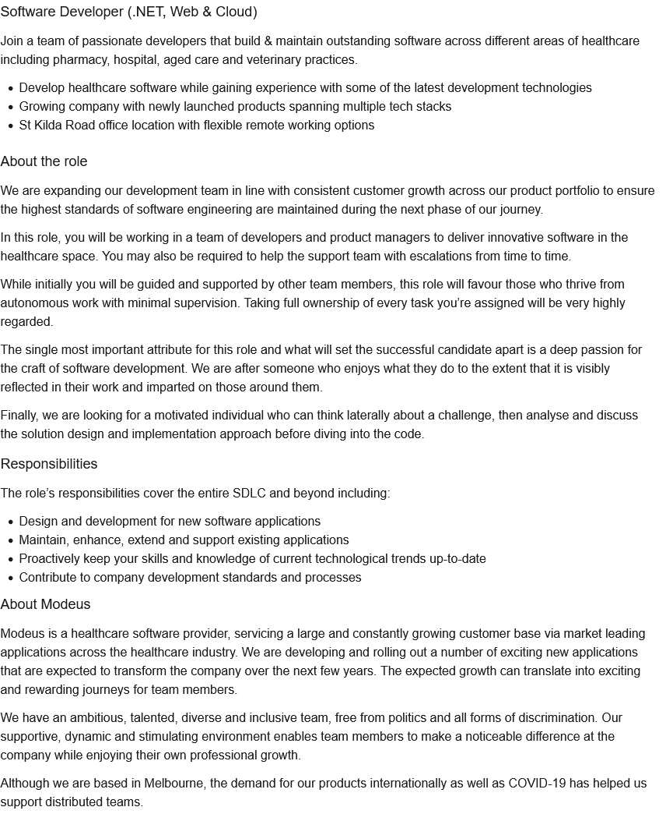

The position I have chosen in a Software Developer role that specialises in software for the healthcare industry. The job will require the employee to be a team member with product managers and other developers for the purpose of developing innovative software for healthcare companies. The job requires autonomy- an ability to work unsupervised. The employers are seeking to employ someone who can think laterally, analyse and discuss what they are designing and planning to implement before coding.
The job requires the applicant to possess at least three years in C#, ASP.NET, Web API, TSQL, Entity Framework, WPF amd XAML. Any beneficial experience may include HTML, CSS, Javascript, Microsoft Azure, .NET Core, and a knowledge of the healthcare industry.
At the present, I do not possess any skills for this kind of role- my programming experience is limited to an amateur-level in Basic and Java. I have not been highly active in programming for a number of years, however it is an area I believe I could be proficient at given further training and I have enjoyed it in the past. The professional area I possess the most experience in is child care.
In order to achieve a role such as this one is to first, obtain my degree in Information Technology, then aim for a junior software development role early on. This could require me to take on an apprenticeship initially. Either before or after an apprenticeship or junior role, I could undertake other courses in other programming areas- not necessarily another full degree but short and specialised courses related to programming. After having worked for three years or so, as well as having broadened my programming knowledge as required, I may find myself at a point where I could apply for this job and succeed. It may require to have progressed from a junior role to another first.
Click here to see the job advertisement I have discussed
Below is a screenshot of the job advertisment.
Home | About Me | Interest in IT | Personal Profile | My Project Idea